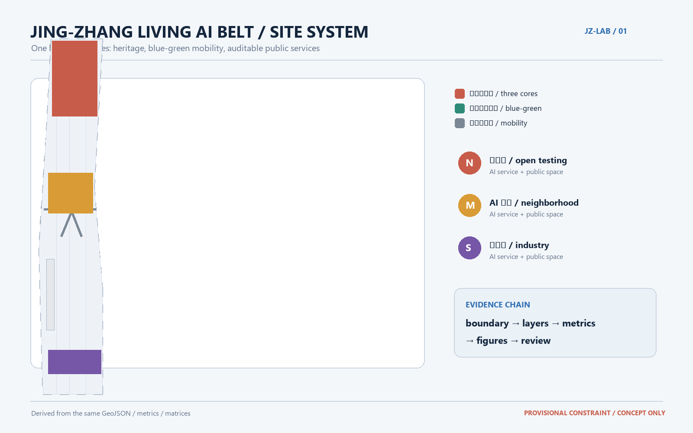
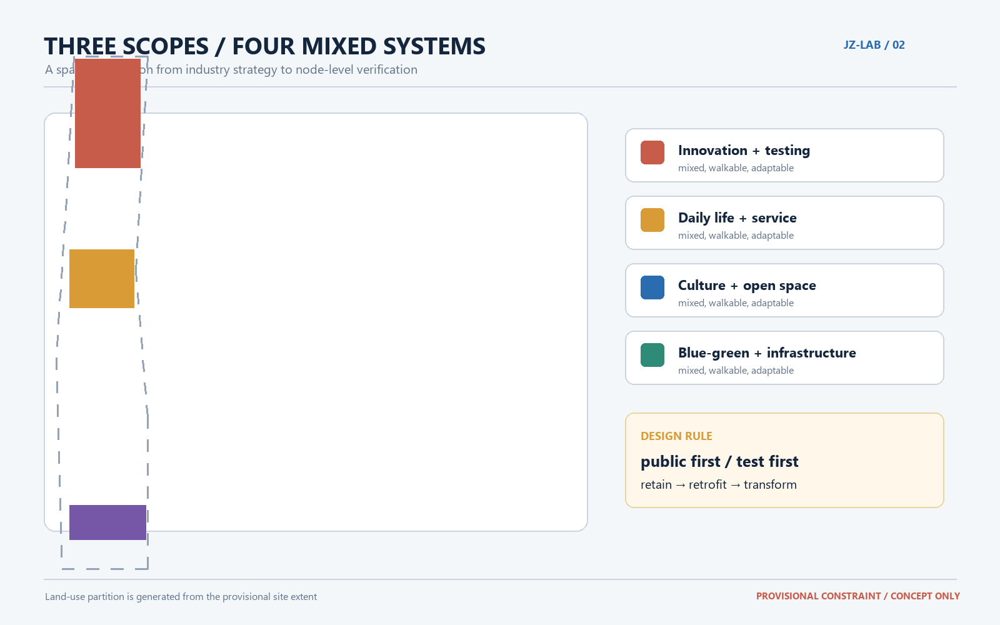
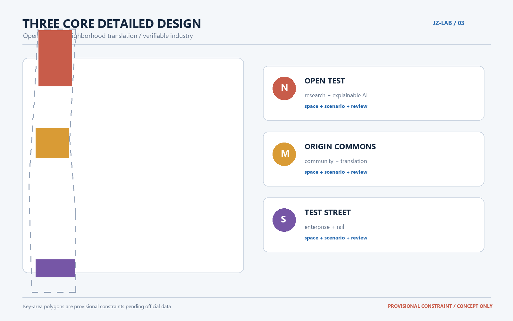
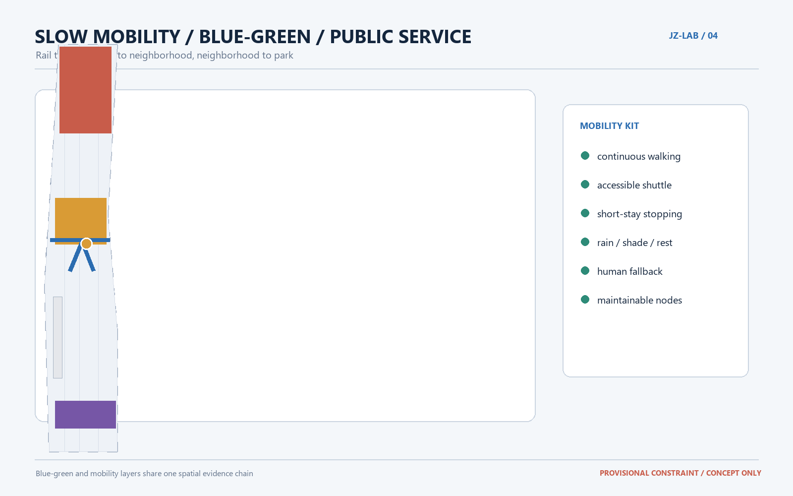
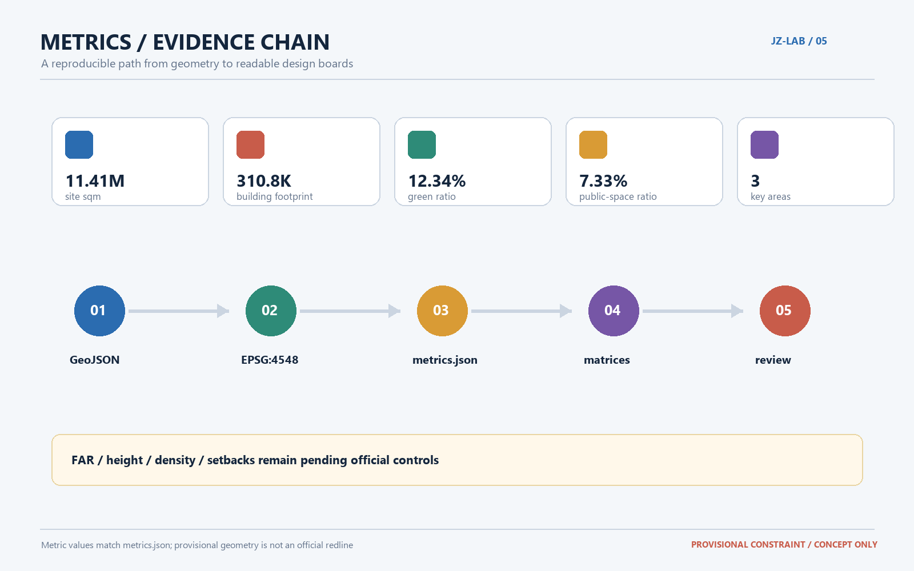

Jing-Zhang Living AI Belt
A co-trained urban living lab · PROVISIONAL CONSTRAINT / CONCEPT ONLY
Core metrics
11,412,825site sqm
310,807building footprint sqm
0.123423green ratio
0.073281public-space ratio
3key areas
Evidence-oriented design boards





Review sections
Review status
The current package is generated from provisional geometry. FAR, height, density, setbacks, official road redlines, and precise key-area polygons require professional confirmation before any statutory or implementation claim.
All figures are local and offline. Values shown here are derived from metrics.json.